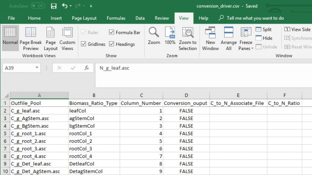
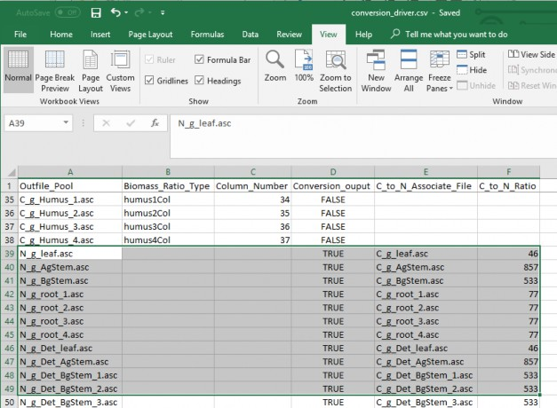
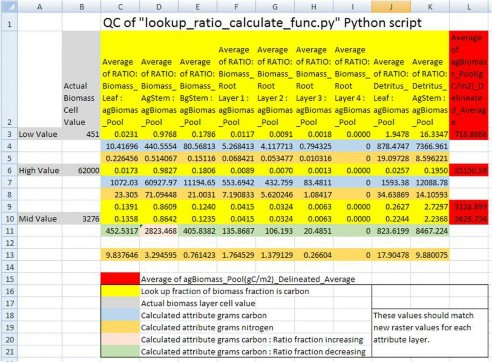
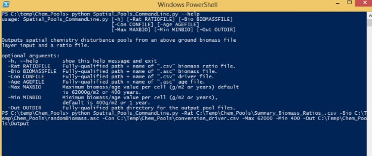

D.4 | Create Initial Soil and Plant Chemistry Spatial (ASCII Grid) Data Pools
Overview (Tutorial D.4 - Create Initial Spatial Soil and Plant Chemistry Pools)
VELMA simulates responses of 58 soil and plant chemistry pools to changes in climate, land use and land cover. This document explains how to initialize the sizes (nitrogen or carbon grams/m2) of these pools to reflect conditions at the beginning of a simulation. It is up to the user to obtain the spatial data describing those initial conditions. For example, data describing the amount of forest aboveground biomass across a landscape 30-meter grid can be obtained from remote sensing sources such as http://geotrendr.ceoas.oregonstate.edu/landtrendr/, or https://www.sciencedaily.com/ releases/2011/04/110420125458.htm.
Initial chemistry or nutrient pools are created through a series of transformations of above ground biomass to each of the respective spatial and chemistry data pools. These transformations are defined by relationship ratios (fractions) each pool has to "real" or estimated measurements of above ground carbon, gC/m² for the study area. Optionally, a cover age file can be used to create these same chemistry pool ASCII rasters from the ratio lookup table.
58 VELMA Simulator spatial data pools will be created from this one raster grid biomass layer (Table 1 & 2). See Table 1 for the complete list of initial layers that will be created, and Table 2 for the C:N ratio pools created. Each spatial data pool layer will have its own corresponding Grid Ascii (.asc) map file upon completion of the Python script. These Grid Ascii (.asc) map files will be used as inputs to VELMA for initializing the map disturbance events.
Software Requirements
To run and produce the processed permeability fraction map (ASCII) from the "roads" or impervious surface layer (ASCII), you will need the following:
- Python version 2.7: Current release is 2.7.11
- Python comes pre-packaged within ArcGIS, so it is likely you already have it installed on your computer. For example, a default install is currently here: C:\Python27\ArcGIS10.2\python.exe. Check to see if you have Python installed before installing a new version. If Python is not installed, you can obtain a copy here: https://www.python.org/download/releases/2.7/ Note that Python 2.7 is currently considered safe for use on U.S. EPA network and non-network computers.
- NumPy package installed, for the Python version
File Requirements for Data Processing
- ASCII Map requirements:
- Above ground carbon g / m² ASCII (.asc) raster that matches the VELMA modeling DEM to the exact extent, row and column count, and cell size. (Optional, if using an age map)
- Age ASCII raster that matches the VELMA modeling DEM to the exact extent, row and column count, and cell size. (Optional, if using a biomass map)
- Biomass ratio look up file which contains all the pool attributes seen in table 1.
- Pool ratios values in subsequent columns (quantity 37) (Table 1).
- Biomass values (stand age / mass) is in the first column (Figure 1).
- Header and Column arrangement must match order in Table 1.
- Saved in ".csv" comma delaminate format
- Conversion driver file that relates ratio look up file column inputs to output names and additional C:N nitrogen conversion pools.
- Pool ratios values in subsequent columns (quantity 37) (Table 1) and the nitrogen conversion pools (quantity 21) (Table 2)
- Column descriptions (Figure 2 and 3):
- Outfile_Pool = The output file name for the ratio pool
ii. Biomass_Ratio_Type = Spatial data pool type
iii. Column_Number = The column number associate with the spatial data pool type.
iv. Conversion_output = "FALSE" if the spatial data pool type is initial pool, "TRUE" if itp a C:N nitrogen conversion.
- C_to_N_Associate_File = The filename of the spatial pool type to be converted to the nitrogen spatial pool by the C:N ratio.
vi. C_to_N_Ratio = The C:N ratio that is divided into the carbon spatial pool to create the nitrogen poolli Header and Column arrangement must match the order in Figure 2 and 3.
- Saved in ".csv" comma delaminate format
- Maximum age (years) or above ground (gC / m²) (Optional, default to 400 years or 62000 gC / m²)
- Minimum age (years) or above ground (gC / m²) (Optional, default to 1 years or 400 gC / m²)
Table 1.
Column ordering of the biomass ratio pool attributes file. Unless noted by it's chemisty, all units are grams carbon / m².p Highlighted pools are created from relationships to the first column, total above ground carbon.
| Column Letter | Pool Attribute |
|---|---|
| A | Average of agBiomass_Pool(gC/m2)_Del ineated_Average |
| B | Average of RATIO: Biomass_Leaf : agBiomas_Pool |
| C | Average of RATIO: Biomass_AgStem : agBiomas_Pool |
| D | Average of RATIO: Biomass_BgStem : agBiomas_Pool |
| E | Average of RATIO: Biomass_Root Layer 1 : agBiomas_Pool |
| F | Average of RATIO: Biomass_Root Layer 2 : agBiomas_Pool |
| G | Average of RATIO: Biomass_Root Layer 3 : agBiomas_Pool |
| H | Average of RATIO: Biomass_Root Layer 4 : agBiomas_Pool |
| I | Average of RATIO: Detri tus _Leaf : agBiomas_Pool |
| J | Average of RATIO: Detri tus _AgStem : agBiomas_Pool |
| K | Average of RATIO: Detri tus _BgStem Layer 1 : agBiomas_Pool |
| L | Average of RATIO: Detri tus _BgStem Layer 2 : agBiomas_Pool |
| M | Average of RATIO: Detri tus _BgStem Layer 3 : agBiomas_Pool |
| N | Average of RATIO: Detri tus _BgStem Layer 4 : agBiomas_Pool |
| O | Average of RATIO: Detri tus _Root Layer 1 : agBiomas_Pool |
| P | Average of RATIO: Detri tus _Root Layer 2 : agBiomas_Pool |
| Q | Average of RATIO: Detri tus _Root Layer 3 : agBiomas_Pool |
| R | Average of RATIO: Detri tus _Root Layer 4 : agBiomas_Pool |
| S | Average of RATIO: NH4_Pool _Layer 1 : agBiomas_Pool |
| T | Average of RATIO: NH4_Pool _Layer 2 : agBiomas_Pool |
| U | Average of RATIO: NH4_Pool _Layer 3 : agBiomas_Pool |
| V | Average of RATIO: NH4_Pool _Layer 4 : agBiomas_Pool |
| W | Average of RATIO: NO3_Pool _Layer 1 : agBiomas_Pool |
| X | Average of RATIO: NO3_Pool _Layer 2 : agBiomas_Pool |
| Y | Average of RATIO: NO3_Pool _Layer 3 : agBiomas_Pool |
| Z | Average of RATIO: NO3_Pool _Layer 4 : agBiomas_Pool |
| AA | Average of RATIO: DON_Pool _Layer 1 : agBiomas_Pool |
| AB | Average of RATIO: DON_Pool _Layer 2 : agBiomas_Pool |
| AC | Average of RATIO: DON_Pool _Layer 3 : agBiomas_Pool |
| AD | Average of RATIO: DON_Pool _Layer 4 : agBiomas_Pool |
| AE | Average of RATIO: DOC_Pool _Layer 1 : agBiomas_Pool |
| AF | Average of RATIO: DOC_Pool _Layer 2 : agBiomas_Pool |
| AG | Average of RATIO: DOC_Pool _Layer 3 : agBiomas_Pool |
| AH | Average of RATIO: DOC_Pool _Layer 4 : agBiomas_Pool |
| AI | Average of RATIO: Humus _Layer1 : agBiomas_Pool |
| AJ | Average of RATIO: Humus _Layer2 : agBiomas_Pool |
| AK | Average of RATIO: Humus _Layer3 : agBiomas_Pool |
| AL | Average of RATIO: Humus _Layer4 : agBiomas_Pool |

Table 2.
Additional nitrogen spatial pools derived from C:N ratios of above ground carbon pools.
| Spatial Data Pool Name | Unit Type |
|---|---|
| N_g_leaf.asc | N g/m² |
| N_g_AgStem.asc | N g/m² |
| N_g_BgStem.asc | N g/m² |
| N_g_root_1.asc | N g/m² |
| N_g_root_2.asc | N g/m² |
| N_g_root_3.asc | N g/m² |
| N_g_root_4.asc | N g/m² |
| N_g_Det_leaf.asc | N g/m² |
| N_g_Det_AgStem.asc | N g/m² |
| N_g_Det_BgStem_1.asc | N g/m² |
| N_g_Det_BgStem_2.asc | N g/m² |
| N_g_Det_BgStem_3.asc | N g/m² |
| N_g_Det_BgStem_4.asc | N g/m² |
| N_g_Det_root_1.asc | N g/m² |
| N_g_Det_root_2.asc | N g/m² |
| N_g_Det_root_3.asc | N g/m² |
| N_g_Det_root_4.asc | N g/m² |
| N_g_Humus_1.asc | N g/m² |
| N_g_Humus_2.asc | N g/m² |
| N_g_Humus_3.asc | N g/m² |
| N_g_Humus_4.asc | N g/m² |
Figure 6. Summary Biomass Ratio Look up file, .csv
Figure 7. Conversion diver file
Figure 8. Conversion driver file
Processing
Conversion of biomass (g / m²) to the final spatial pools and nitrogen pools (g / m²) are made through an intermediate step of converting mass to carbon (g / m²) pools, and then using the conversion driver file, different C to N ratios for each pool are used to calculate the final nitrogen pools. Fractions (ratios) of spatial pools change both in the positive and negative direction as a forest ages or increases in total biomass. Ratio pools can increase or decrease between stand age increments, and the calculations of these intermediate biomass observational values must reflect this dynamic nature of changing ratios between time steps. Intermediate values of biomass, those that land in between time step years, were therefore linearly interpolated between the time point bounds. Spatial map ascii grid values for each of the 37 pools should then backward match ratio conversions and final C to N calculations to the original "observed" above ground biomass. (Only a partial list of pools is displayed here).
When using age maps instead of carbon biomass maps, spatial pools are created from the year and row number each cell corresponds too. If a cell is 1 year old, row 1 values would be used, while a 400-year- old cell relates to row 400.
Example: A mid biomass cell value at B10 = 3276 (g / m²) and is part way between stand age values at L9 and L10. It's above ground stem carbon mass fraction increases from 0.8609 (D9) to 0.8642 (D10). So, its fraction stem mass (column D) should increase as its percentage difference moves from L9 towards LD10. Conversely, for all the other pool attributes, its percentage difference would increase as its fraction moves the opposite direction from rows 10 to rows 9.
Figure 9. Quality control check of Python script's dynamic conversions of "observed" above ground biomass (g / m²) to the final
nitrogen (g / m²) spatial data pools.
The "Spatial_Pools_CommandLine.py" and can be run on the Command Prompt line with Python. This script requires at a minimum, one biomass or one age surface map, a ratio look up file, a conversion driver file, and one output directory name. Optionally, a minimum and maximum age or grams carbon value can be provided.
Windows PowerShell Command prompt input example:
"python C:\Path\To\Spatial_Pools_CommandLine.py -Rat C:\Temp\Chem_Pools\Summary_Biomass_Ratios_.csv -Bio C:\Temp\Chem_Pools\randomBiomass.asc -Con C:\Temp\Chem_Pools\conversion_driver.csv - Max 62000 -Min 400 -Out C:\Temp\Chem_Pools\Output"
"python C:\Path\To\Spatial_Pools_CommandLine.py -help" for exact arguments (Figure 5).
Figure 10 Window PowerShell
Note
Processing time is very dependent on processing power and the size of your study area. For example, the Blue River, in Oregon, had a study grid of ~350,000 cells and took ~10 minutes for each of the 37 pools, for a total of 6-8 hours. The Python shell will print updates of pool processing steps, and say "All Done!" when it's done.
* Creating a notepad text file may make coping and pasting the prompt input easier.
Scripts
# Command line for gathering info for processing and generating initial spatial pools # 9-11-2018
# Author: Paul Pettus
# Spatial_Pools_CommandLine.py #
import time import csv
import os, sys, argparse import numpy
import linecache
# Error message class class Usage(Exception):
def init (self, msg): self.msg = msg
# Main class
def main(argv=None):
if argv is None: argv = sys.argv
try:
# Describe the tool and required aruments
parser = argparse.ArgumentParser(description='Outputs spatial chemistry disturbance pools
from an'+ file.')
' above ground biomass file layer input and a ratio
# Ratio file input
parser.add_argument('-Rat', action='store', dest='ratioFILE',
help='Fully-qualified path + name of ".csv" biomass ratio file.')
# Biomass ascii file input
parser.add_argument('-Bio', action='store', dest='biomassFILE',
help='Fully-qualified path + name of ".asc" biomass file.')
# Biomass ascii file input
parser.add_argument('-Con', action='store', dest='conFILE',
help='Fully-qualified path + name of ".csv" driver file.')
# Age ascii file input
parser.add_argument('-Age', action='store', dest='ageFILE',
help='Fully-qualified path + name of ".asc" age file.')
# Maximum biomass value per cell
parser.add_argument('-Max', action='store', dest='maxBio',
help='Maximum biomass/age value per cell (g/m2 or years) default is
62000g/m2 or 400 years.')
# Minimum biomass value per cell
parser.add_argument('-Min', action='store', dest='minBio',
help='Minimum biomass/age value per cell (g/m2 or years), default is
400g/m2 or 1 year.')
### Minimum biomass value per cell
## parser.add_argument('-Min', action='store', metavar='minBio', ## type=int,
## help='Minimum biomass/age value per cell (g/m2 or years), default is 400g/m2 or 1 year.')
# Output dir for spatial chemistry pools parser.add_argument('-Out', action='store', dest='outDIR',
help='Fully-qualified path directory for the output pool files.') args = parser.parse_args()
# args parsing
if args.ratioFILE == None: ratioFile = args.ratioFILE
else:
ratioFile = str(os.path.abspath(args.ratioFILE))
if args.biomassFILE == None: biomassFile = args.biomassFILE
else:
biomassFile = str(os.path.abspath(args.biomassFILE))
if args.conFILE == None: conFile = args.conFILE
else:
conFile = str(os.path.abspath(args.conFILE))
if args.ageFILE == None: ageFile = args.ageFILE
else:
ageFile = str(os.path.abspath(args.ageFILE))
outDir = str(os.path.abspath(args.outDIR)) + "\\" if args.minBio == None:
minValArg = args.minBio else:
minValArg = int(args.minBio)
if args.maxBio == None: maxValArg = args.maxBio
else:
maxValArg = int(args.maxBio)
# Print all input arguments print('\n' + '\n' + "Echo inputs" + '\n')
## print(args)
## print('\n')
print(outDir, ratioFile, biomassFile, conFile, ageFile, minValArg, maxValArg) # do the work function
buildRatios(outDir, ratioFile, biomassFile, conFile, ageFile, minValArg, maxValArg)
except Usage as e: print(e.msg) return 2
except Exception as e:
# STUB exception handler
# Warning: poor programming style.
# Catches almost any exception (but not KeyboardInterrupt -- which is a Good Thing) raise e
## Return an numpy array from an ascii raster def ascii2array(asciifn):
#### GDAL version
## dsAscii = gdal.Open(asciifn,gdalconst.GA_ReadOnly) ## cols = dsAscii.RasterXSize
## rows = dsAscii.RasterYSize ## bands = dsAscii.RasterCount
## band = dsAscii.GetRasterBand(1)
array = numpy.loadtxt(asciifn, skiprows=6, dtype= numpy.float32) return array
## Return and ascii raster file from an numpy array, output file name ## (optional inputs are an alternative ascii area of interest and or ## an optional header text: these are not used in the script
def array2ascii(array, asciiOutfn, asciiaoi = None, headerList = None): # set up header text for the output ascii raster
if asciiaoi == None:
## for i in headerList: header = headerList
else:
header = linecache.getline(asciiaoi,1) header += linecache.getline(asciiaoi,2) header += linecache.getline(asciiaoi,3) header += linecache.getline(asciiaoi,4) header += linecache.getline(asciiaoi,5) header += linecache.getline(asciiaoi,6)
# open the output file and write the header text and numpy array # and save the output file
f = open(asciiOutfn, "w") f.write(header)
numpy.savetxt(f, array, fmt="%f") f.close()
## return the header information of an ascii raster def readHeader(asciiFile):
# return error if the ascii is not found if not os.path.exists(asciiFile):
raise Usage('Cannot find ASCII "' + asciiFile + '"')
# Open file and read in header info readFile = open(asciiFile)
header = readFile.readline() #ncols header += readFile.readline() #nrows header += readFile.readline() #xllcorner header += readFile.readline() #yllcorner header += readFile.readline() #cellsize
header += readFile.readline() #NODATA_value readFile.close()
return header
# Do the work class, build the ratio files
def buildRatios(finalPoolDir, ratioFile, biomassFile, conFile, ageFile, minValArg, maxValArg):
##################################################################################
# Start preprocess code block ##################################################################################
# return error if the ratio file is not found if not os.path.exists(ratioFile):
raise Usage('Cannot find ratio file "' + ratioFile + '"')
# return error if both the age or biomass asciis are arguments if ageFile != None and biomassFile != None:
print(ageFile) print(biomassFile)
raise Usage('Please choose either a biomass or an age ASCII raster, not both.')
# return error if the age or biomass ascii is not found if ageFile == None:
# return error if the biomass ascii is not found
print("Calculating chemistry pool rasters from biomass raster."+ '\n') ## print("hello")
## print(biomassFile)
if not os.path.exists(biomassFile):
raise Usage('Cannot find biomass ASCII "' + biomassFile + '\n')
else:
print("Calculating chemistry pool rasters from age raster."+ '\n') if not os.path.exists(ageFile):
raise Usage('Cannot find age ASCII "' + ageFile + '"')
## # return error if the biomass ascii is not found ## if not os.path.exists(biomassFile):
## raise Usage('Cannot find conversion driver file "' + conFile + '"')
# create the output dir if it doesn't exist
if not os.path.exists(os.path.dirname(finalPoolDir)): print("Final outpur dir not found, creating it."+ '\n') # Safety bachslash to slash replacement finalPoolDir.replace("\\",'/') os.makedirs(os.path.dirname(finalPoolDir))
# Set maximum and minimum biomass value if biomassFile != None:
print(biomassFile)
# Set default maximum and minimum biomass value if maxValArg == None:
maxValue = 62000 else:
maxValue = maxValArg
if minValArg == None: minValue = 400
else:
minValue = minValArg
# Set maximum and minimum age value if ageFile != None:
# Set default maximum and minimum age value if maxValArg == None:
maxValue = 400 else:
maxValue = maxValArg
if minValArg == None: minValue = 0
else:
minValue = minValArg
# Check to that maxValue isn't larger than length of ratio lookup
ratioLookupArray = numpy.genfromtxt(ratioFile,skip_header=1, dtype=float, delimiter=',') rCount, cCount = ratioLookupArray.shape
if int(maxValue) > int(rCount):
raise Usage('Max age is larger than ratio file rows ' + str(rCount))
print(maxValue) print(minValue)
# numpy method to read .csv to array
ratioLookupArray = numpy.genfromtxt(ratioFile,skip_header=1, dtype=float, delimiter=',')
# Read biomass or age raster to array if ageFile != None:
# Read age raster to array ageArray = ascii2array(ageFile)
# get the ascii raster header information buildRatios.header = readHeader(ageFile)
else:
# Read biomass to array
biomassArray = ascii2array(biomassFile)
# get the ascii raster header information buildRatios.header = readHeader(biomassFile)
# read through ratio conversion driver file datafile = open(conFile, 'r') next(datafile,None)
myreader = csv.reader(datafile)
# create ratio conversion to a list driverList = list(myreader)
# close file datafile.close()
##################################################################################
# End preprocess code block ##################################################################################
##################################################################################
# Start functions block ##################################################################################
# Function: Returns grams of carbon for the upper and lower most
# biomass lookup cells. These two cells do not need to dynamically # calculated.
# Inputs:
# upval = the lookup ratio
# cellmass = biomass cell value # Output:
# gramsC = grams of carbon
def calLowHighper(upval,cellmass): gramsC = upval*cellmass return gramsC
# Function: Dynamically returns grams of carbon from the larger and smaller # biomass lookup cells. Creates fraction difference between a larger
# and smaller biomass value in the biomass lookup table, then applies that # fraction value difference to the lookup attribute.
# Inputs:
# smallMass = smaller biomass from the velma attribute array # largeMass = larger biomass from the velma attribute array
# upval = the lookup ratio that corresponds to the largeMass value # lowval= the lookup ratio that corresponds to the smallMass value # cellmass = biomass cell value
# Output:
# gramsC = grams of carbon # Variables:
# difmass = difference bewteen the large and small biomass # permass = fraction of cellmass that is over the smallMass # difval = difference between upval and lowval
# deltaRatioValue = corresponding fraction of the lookup value # newValue = the correct ratio of the the lookup value
# gramsC = grams of carbon
def calMidper(upval,lowval,largeMass,smallMass,cellmass): difmass = (largeMass-smallMass)
permass = (cellmass-smallMass)/difmass difval = (upval-lowval)
# If the difval is negative then lowval is larger than upval. if difval < 0:
difval = (lowval-upval) deltaRatioValue = permass*difval newValue = (lowval-deltaRatioValue) gramsC = cellmass*newValue
return gramsC elif difval == 0:
gramsC = cellmass*upval return gramsC
# Else: upval is larger than lowval else:
deltaRatioValue = permass*difval newValue = deltaRatioValue+lowval gramsC = cellmass*newValue
return gramsC
# Function: For each cell in biomass raster, lookup its biomass in the biomass ratio lookup # table and calculate a new grams of carbon value. Returns an array that can be turned back # into a new raster for any inputed velma attribute.
# Inputs:
# biomassArray = input biomass array, from biomass raster
# ratioLookupArray = input biomass lookup array, attribute table # column = column number of the attribute of interest
# Output:
# outArray = array with corresponding values of attribute calculated from biomass # Variables:
# i = current row of biomass array
# j = current column of biomass array, from biomass raster
# row = current row of biomass lookup array, attribute table # rowPlus = one row ahead of item or current row
# cellValue = value of the current cell in the biomass array, from biomass raster # returnCell = grams of carbon returned from function call
def biomassConverter(biomassArray,ratioLookupArray,column,maxValue,minValue): #creates numpy array with zeros numpy.zeros()
#array is the same size as biomass raster array rowArraySize, colArraySize = biomassArray.shape
# create empty output array
outArray = numpy.zeros( (rowArraySize,colArraySize) ) rowRatioArray, colRatioArray = ratioLookupArray.shape
# Loop through all the biomass raster values for i in xrange(rowArraySize):
for j in xrange(colArraySize):
# Loop through all of the biomass values in the lookup chem ratios for row in xrange(rowRatioArray):
# index for the next row rowPlus = row + 1
cellValue = float(biomassArray[i,j])
# Makes sure no cell value is over the maximum biomass allowed if cellValue > maxValue:
cellValue = float(maxValue)
# Make sure no cell value is under the minimum biomass allowed if cellValue < minValue:
cellValue = float(minValue)
ratio
# Breaks loop if first element is in lookup chem ratios if cellValue <= ratioLookupArray[row,0]:
returnCell = calLowHighper(ratioLookupArray[row,column],cellValue) outArray[i,j] = returnCell
break
# Breaks loop if last element in lookup chem ratios if row == (rowRatioArray-1):
returnCell = calLowHighper(ratioLookupArray[row,column],cellValue) outArray[i,j] = returnCell
break
# Looks to see if the biomass cellvalue is inbetween the current lookup chem # item and the next row lookup item
if cellValue > ratioLookupArray[row,0] and cellValue <=
ratioLookupArray[rowPlus,0]:
# Return value that is between the two lookup chem ratio rows returnCell =
calMidper(ratioLookupArray[rowPlus,column],ratioLookupArray[row,column],
ratioLookupArray[rowPlus,0],ratioLookupArray[row,0],cellValue)
outArray[i,j] = returnCell # Return the chem pool array
return outArray
#creates numpy array with zeros numpy.zeros() #array is the same size as biomass raster array
def ageConverter(ageArray,ratioLookupArray,column,maxValue,minValue): clockStartBiomass = time.clock()
rowArraySize, colArraySize = ageArray.shape outArray=numpy.zeros( (rowArraySize,colArraySize) )
for i in xrange(rowArraySize):
for j in xrange(colArraySize): yearRow = int(ageArray[i,j])
# Change to the year to a max of 400 yo if yearRow > maxValue:
yearRow = maxValue
if yearRow < minValue: yearRow = minValue
# the row number in the lookup ratio file corisponds to age (yr) biomassValue = ratioLookupArray[yearRow,0]
ratioValue = ratioLookupArray[yearRow,column] cellValue = biomassValue * ratioValue outArray[i,j] = cellValue
return outArray ##################################################################################
# End functions block
##################################################################################
print("Starting the 37 Biomass Ratio convertions!"+'\n') ##################################################################################
# Processing block code
##################################################################################
# Loop once through the driver list to create the carbon ratio ascii rasters first for i in driverList:
# Get output file name outName = i[0]
# Get column name, Unused colName = i[1]
# Get ratio column number, check that it is not empty first
# biomass ratio file column number associated with the attribute. # Empty sets are nitrogen conversion completed next step
if i[2] != '':
ratioCol = int(i[2])
# Get conversion boolean, FALSE equals file is not a ratio conversion conversionOut = i[3]
# Function call to calculate each of the attributes and create # a raster from the returned array
if conversionOut == 'FALSE':
# start time clock clockStartBiomass = time.clock()
if ageFile != None:
# For each ratio attribute column determin the ratio of biomass # associated with that particular chemestry pool and return an # array used to create chem pool raster
ratioArray = ageConverter(ageArray,ratioLookupArray,ratioCol,maxValue,minValue) else:
# For each ratio attribute column determin the ratio of biomass # associated with that particular chemestry pool and return an # array used to create chem pool raster
ratioArray = biomassConverter(biomassArray,ratioLookupArray,ratioCol,maxValue,minValue)
# Concatinate output dir with output file name outName = finalPoolDir + outName
# Create the chem pool raster
array2ascii(ratioArray, outName, asciiaoi = None, headerList = buildRatios.header)
# end time clock clockFinishBiomass = time.clock()
biomassTime = round((clockFinishBiomass-clockStartBiomass)/60,2) print("Completed: " + outName + " in " + str(biomassTime)+" minutes!"+'\n')
print("Starting the C to N convertions!" + '\n')
# Second time through the driver list to complete nitrogen ratios last # Create Nitrogen grams per square meter from carbon layers
# Values are carbon to nitrogen ratios from Bob ratio chem file for i in driverList:
# Get output file name outName = i[0]
# Get conversion boolean, TRUE equals file is a nitrogen ratio conversion conversionOut = i[3]
# Carbon filename associated with the nitrogen ratio conversion cToNassociateFile = i[4]
# Get ratio conversion, check that it is not empty first.
# Empty set are files that don't have a conversion n to c ratio if i[5] != '':
cToNratio = float(i[5]) if conversionOut == 'TRUE':
# start time clock clockStartBiomass = time.clock()
# Concatinate output dir with input file name associateFile = finalPoolDir + cToNassociateFile
# Get array from ascii raster values from associate carbon raster associateArray = ascii2array(associateFile)
# Create the associated c to n array chemestry pool and return an # array used to create chem pool raster
ratioArray = numpy.divide(associateArray,cToNratio) # Concatinate output dir with output file name outName = finalPoolDir + outName
# Create the chem pool raster
array2ascii(ratioArray, outName, asciiaoi = None, headerList = buildRatios.header)
# end time clock clockFinishBiomass = time.clock()
biomassTime = round((clockFinishBiomass-clockStartBiomass)/60,2) print("Completed: " + outName + " in " + str(biomassTime)+" minutes!"+'\n')
print("Done!"+'\n')
##################################################################################
# End Processing block ##################################################################################
if name == " main ": sys.exit(main())